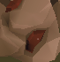
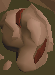
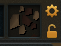
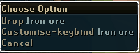

#Outer determines the number of inventories to fill and drop (Also prevent infinite loop) outer = 3 while outer > 0 : inner = 1 while inner < 13 : if(exists(Pattern().similar(0.56))) : click(Pattern().similar(0.56)) sleep(2.25) try: click(Pattern().similar(0.44)) except: sleep(.5) sleep(7) inner = inner+1 #Loop to drop all ores (stop used to prevent infinite loop) stop = 0 while (exists(Pattern().similar(0.95)) and stop < 40): try: rightClick(Pattern().similar(0.95)) sleep(.25) click(Pattern().similar(0.39).targetOffset(-25,-7)) sleep(.25) except: sleep(.5) stop = stop + 1; #TODO Add logic to drop gems outer = outer - 1